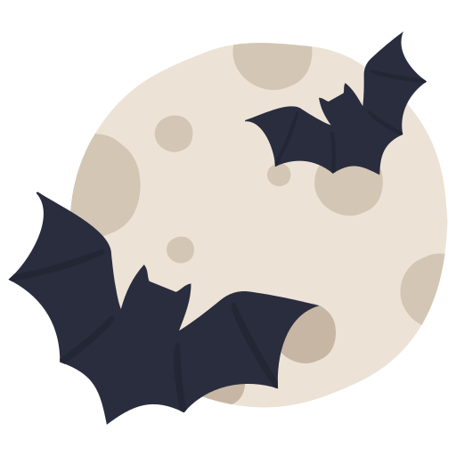

Halloween Origen 
Halloween o Hallowe’en es el nombre en inglés de una festividad popular conocida también como la Noche de los Muertos, la Víspera de Todos los Santos o la Noche de Brujas. Normalmente, esta celebración involucra disfraces y decorados siniestros o de terror, vinculados con el mundo de los muertos y de las brujas, y se celebra todos los años en la noche del 31 de octubre. El nombre de esta celebración es la contracción de All Hallows’ Evening, es decir, “la víspera de todos los santos”, dado que se celebra en la noche previa al Día de Todos los Santos, según el calendario de la Iglesia cristiana occidental. Se trata de una festividad propia de las naciones anglosajonas, como Reino Unido, Irlanda, Canadá, Estados Unidos y, en menor medida, Australia y Nueva Zelanda. También se ha popularizado, por contagio cultural, en España y en muchas naciones latinoamericanas. Las variantes actuales de Halloween suelen responder a los modos más comerciales y seculares de celebración, especialmente de Estados Unidos, con disfraces, fiestas y trick-or-treating (o sea, “dulce o broma”: pedir a los vecinos algún dulce de comer bajo amenaza de hacerles travesuras si no acceden). Sin embargo, en muchos países se siguen realizando prácticas tradicionales como llevar velas a las tumbas de los difuntos o abstenerse de comer carne en esa velada.